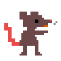
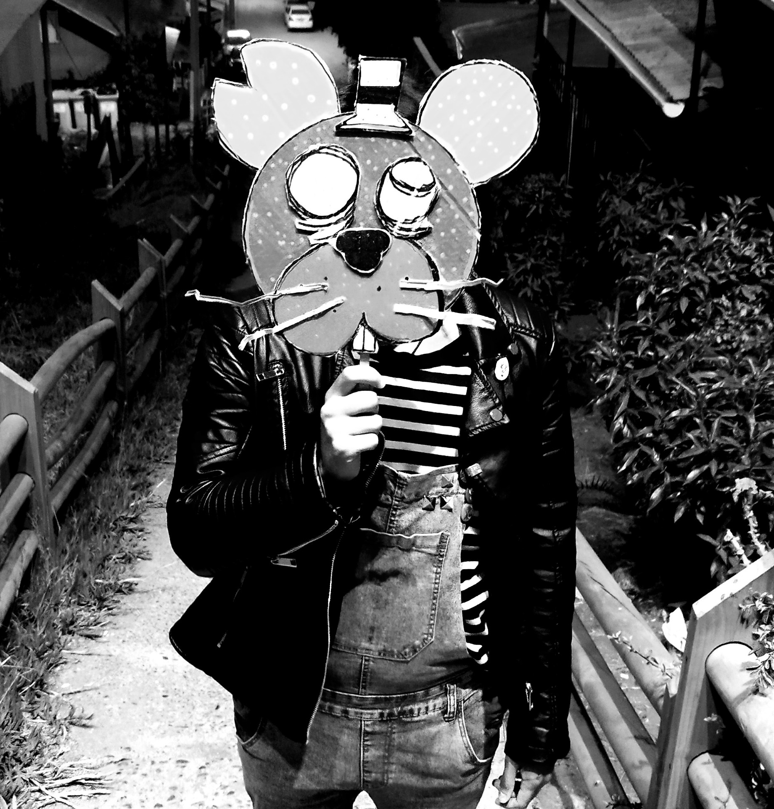

Sobre mí
un diseñador gráfico en construcción, obsesionado con las estéticas raras, el caos organizado y todo lo que huela a cine clase B, videojuegos extraños y cultura alternativa. Me gusta crear cosas que no parecen “bonitas”, pero sí auténticas, con ruido, grano y esa sensación de fotocopia mal hecha que es igual de épica que sincera.
Me muevo entre el diseño, los juegos que hago a puro pulso, las ideas absurdas que se transforman en fanzines, y proyectos que empiezan como bromas pero terminan teniendo más alma que cosas hechas con presupuestos gigantes. Mi estilo… ya lo bauticé: Hezycore, una mezcla de punk, DIY, calle, glitch, humor negro y nostalgia noventera.
Me inspiro del cine de culto, las ratas con armas, los videojuegos retro, los errores felices de Photoshop, y esa estética de “no debería funcionar, pero funciona”. Me gustan los proyectos que se sienten humanos, imperfectos y ruidosos.
Y sí: siempre estoy tratando de aprender, probar algo raro, y ver hasta dónde puede llegar una idea estúpida cuando la tomas en serio.

